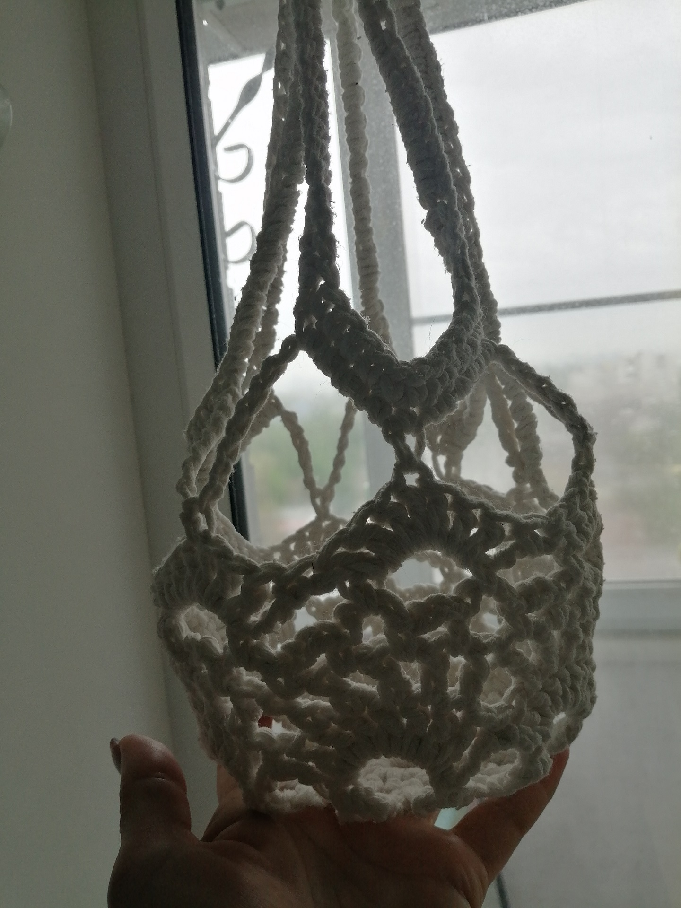
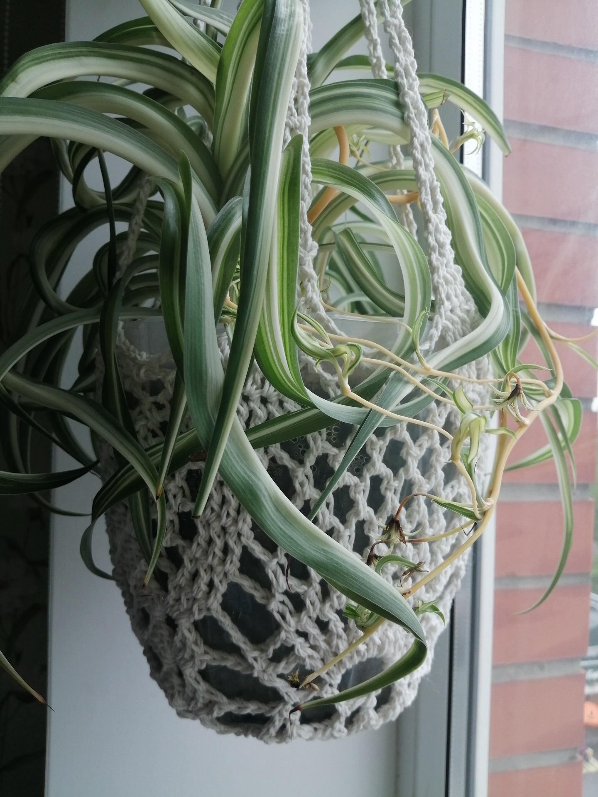
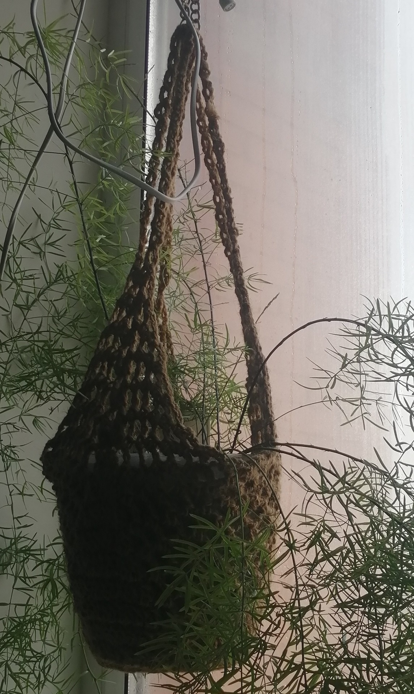
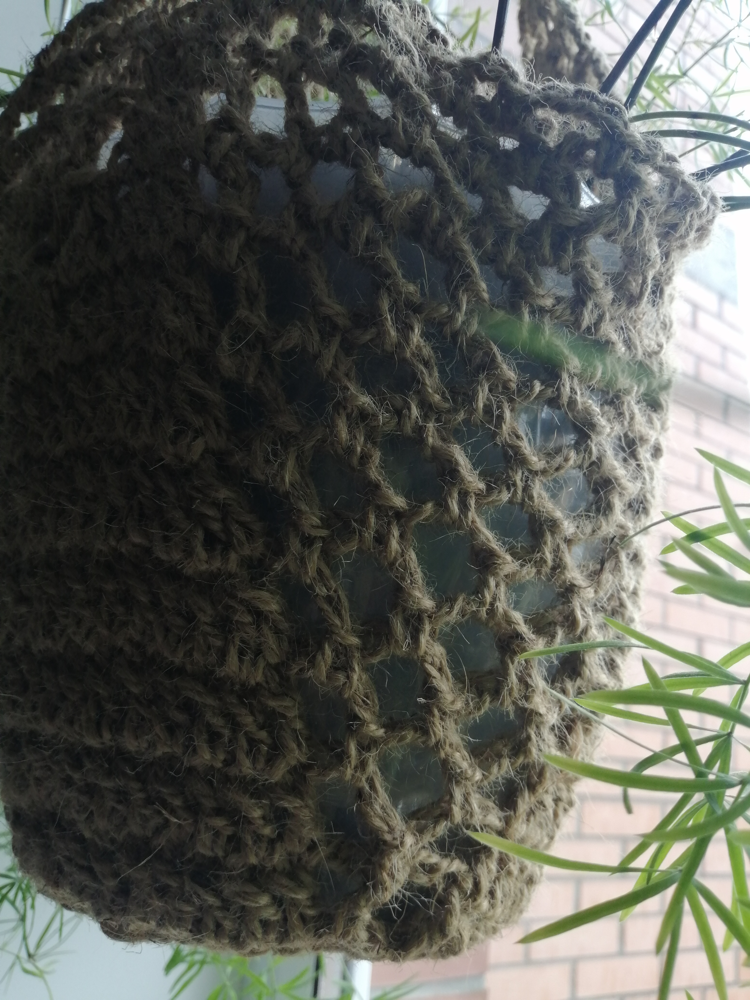
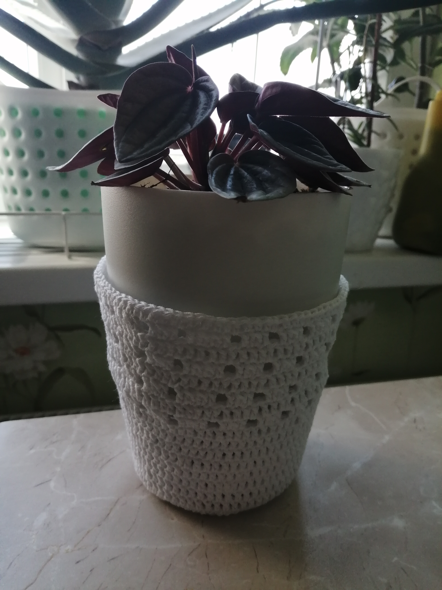
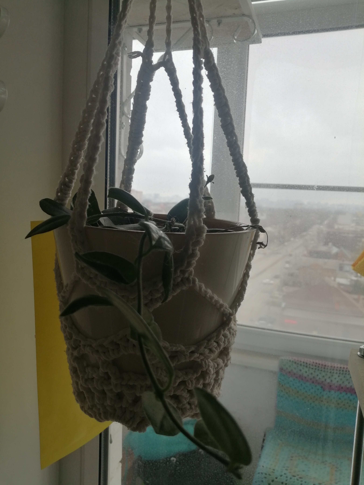

ОДЕЖДА ДЛЯ ЗЕЛЕНЫХ ПИТОМЦЕВ
Кашпо разных размеров, подставки под горшки, подвесные держатели.
Вязаная оправа для ваших зеленых любимцев. Маленькая деталь, которая делает пространство мягче. Стильный и экологичный аксессуар для дома. Каждая петелька создана вручную, что гарантирует уникальность изделия. Прочное плетение отлично держит форму, скрывает недостатки пластиковых горшков и добавляет интерьеру природной эстетики.








Стоимость работы
Кашпо из хлопка
от 300₽
Кашпо подвесное из хлопка
от 400₽
Кашпо из джута
от 400₽
Подвесное кашпо из джута
от 500₽